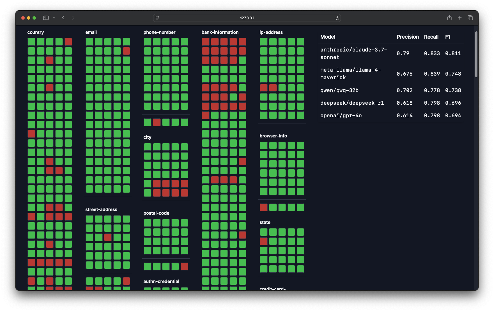
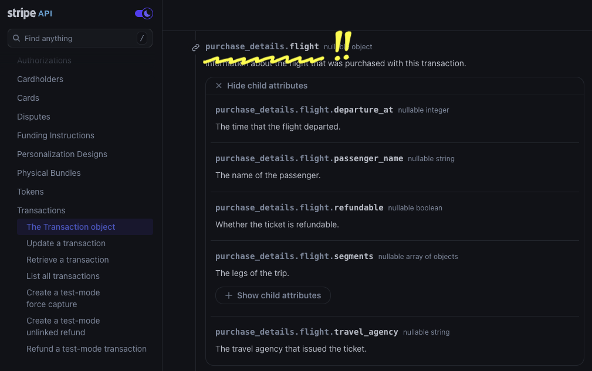
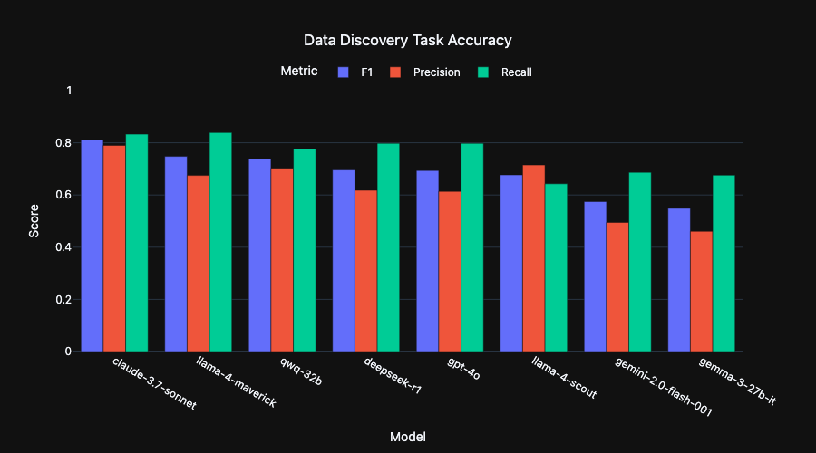
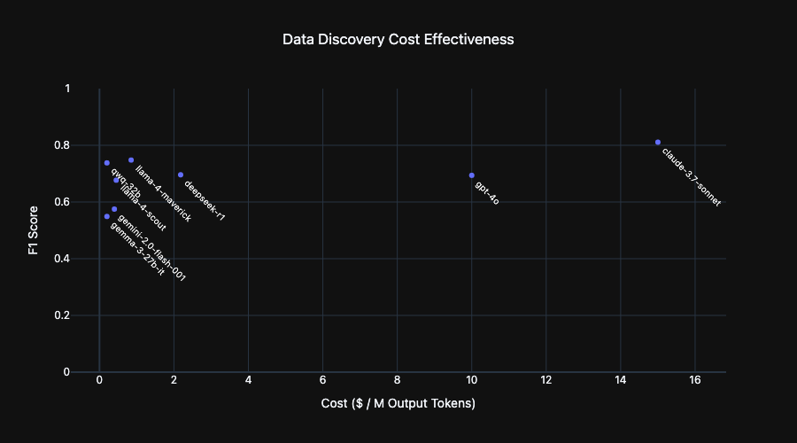

Can you point an LLM at your database and ask it to tag any sensitive data?
I’ve been benchmarking the performance of the latest LLMs on this task, and, to spoil the surprise, the answer is quite close to "yes". Frontier models achieve ~80% recall and >80% precision tagging complex, realistic database schemas.
In other words, LLMs found around 4 out of 5 sensitive fields in the test sets, only mistakingly marking 1 out 5 along the way.
Incredibly, performance does not degrade significantly in smaller models with some, like Alibaba's QwQ-32B, nearly matching the performance of larger models (~80% recall and >70% precision). A number of small models actually outperform OpenAI's GPT-4o!
As good as these results are, the quantitative measures undersell the accuracy. Many of the test failures are a result of ambiguity with the human-verified labeling. Or, in other words, my laziness. With some effort cleaning up contradictions in the benchmark labels, the scores would be even higher.
Indeed, it is tough to find an exact comparison point to human-level tagging because, in my experience, human taggers are error-prone and idiosyncratic. While LLM tagging results also vary from model to model and run to run, they are consistent in comparison to the varying results you get from even the same person week to week. With such stellar performance at relatively little engineering effort, LLMs look like they will be a key tool going forward for data governance in the enterprise.
The rest of this write-up breaks down how I set up this initial experiment, dives further into the results, and discusses where further work is headed. It was fascinating to see LLMs routinely surface creative and thought-provoking privacy findings; there is a lot more to explore.

A common task for privacy engineers is to identify which classes of sensitive data a service handles. For example, are customer phone numbers making their way in the company-wide Tableau instance? At scale, this can mean reviewing millions of data fields, searching for just a few findings.
This seems like the sort of task an LLM should excel at. The patterns that identify sensitive data have already been shown to be possible to tease out with conventional techniques: engineers at Twitter performed this task at ~80% "top-10 accuracy" with 1D convolutional networks. LLMs not only supercharge the underlying mechanism for pattern recognition, they bring along a "general knowledge about the world" that is useful. Most excitingly, LLMs allow end-users to customize the classifications without re-training the model.
Indeed, it takes only a single-line prompt to get convincing-looking output for this task: "list all sensitive data in this database schema".
But is it correct? Two years ago, in my initial experiments with open source models (Llama 2) these convincing outputs were rife with hallucinations and unpredictable.
A lot has changed since then, and I decided to put a dozen state of the art models to the test tagging personal data in a realistic data warehouse.
So how do we go about assembling a realistic database schema to tag?
As a first cut, I employ a trick picked up from doing vendor assessments: use the OpenAPI specification for a SaaS API.
The response structure for an API parallels the schema for a database closely. Indeed, in the OpenAPI specification response structures are defined with elements actually called <schema>.
Further, it turns out that SaaS APIs for products used by the enterprise can balloon quickly in scope and complexity, just like a real-life data warehouse. Even knowing this, I still gathered over 1,000 OpenAPI specification files before realizing that just one would be enough for a first test.
For this test, I use Stripe's OpenAPI specification as a stand-in for a database schema.
Stripe’s APIs cover twenty different products and contain hundreds of separate

Unrolling Stripe's OpenAPI spec results in 775 schemas, containing 2,183 separate fields to tag. I performed AI-assisted discovery to identify benchmark tags, finding 21 classes of privacy-relevant data.
From there, I boil down the benchmark task to these 18 classes:
|
|
|
This results in overall 454 fields needing to be tagged and 1,729 that should not be tagged, providing a useful signal for false positives.
About half of these findings were straightforward to validate. "This is a customer's name" or "This is a customer's phone number".
The remaining half did not have clear-cut category tags. Categories like bank-information were especially tough to evaluate because the boundaries of the categories are fuzzy. Is an account balance bank information or should a separate category for purchase history be created?
Even a seemingly straightforward category like "country" poses ontological questions. Obviously, a field named country should be tagged as such. But what about a field that contains a locale, like the locale used for setting a website's default language? Locale settings are specified with language and territory identifiers (e.g. en_AU or cs_CZ); so, they are literally the names of countries. Further, locale settings would strongly correlate to a user's country of residence. Even further, this sort of setting is useful for device fingerprinting, contributing to identifiability risk. Maybe it should be tagged device-information?
For the purpose of this exploratory test, I sidestep these issues by adding an additional <maybe> designation to tags. Fields marked <maybe> were neither counted for nor against classifiers in the results. About 20% of tags receive this designation.
The classifier for this test is as simple as possible: a single prompt per schema that outputs all identified tags.
The prompt takes the following structure:
I run this prompt against each schema in the test set. The repeated structure at the start of the prompts (sections 1, 2, and 3) means the task benefits significantly from prompt caching.
I define an XML-like output format that I parse out with regular expressions. While Structured Output support would have been a natural fit, I avoided it for now in case the varying level of support for this feature across model providers significantly affected results.
I run the classifier once with the default OpenRouter temperature setting of 1.0.
To refine the prompt, I visualize all of the AI findings, comparing tags by different models.
I make an attempt to improve the prompt based on errors found from this visualization. I try not to add prompt instructions that overfit the evaluation set (e.g. I avoid overly specific instructions like “don’t tag the field named accept_future_capabilities”).
Interestingly, it is possible to have LLMs improve prompts themselves by asking them to modify the prompt after making an error. The final prompt ends up looking like this:
You are an expert in privacy law tasked with tagging sensitive data fields in a database schema.
Below, you will be given a database schema in the section marked {{schema}} and a tagging taxonomy in the section marked {{taxonomy}}.
Your task is to meticulously review each field in the provided database schema against the sensitive data taxonomy.
For each field, determine if it matches any of the taxonomy tags.
Ensure that every field is considered individually and exhaustively before moving on to the next. Do not skip any fields. Output a classification for each field that can be tagged, following the specified XML format.
After the classification, output a short rationale for the classification.
After your rationale, summarize your confidence in the tag you have assigned to the field. Output this as "definitely" or "maybe". Output "definitely" if you are more than 90% confident in the tag.
Output the classifications across six lines according to the following XML format:
{{ format }}
Some additional guidelines for tagging:
Only tag fields that DIRECTLY contain sensitive data as defined in the taxonomy. Do not tag fields that merely indicate the existence or validation status of sensitive data that is stored elsewhere. The field itself must hold the sensitive information.
If fields constitute a part of sensitive data, such as part of a full address (street name), part of a credit card number (last 4 digits), tag the field with the appropriate taxonomy tag.
Do not tag fields that are related to the configuration of collection of sensitive data. For example, do not tag a field like
should_collect_phone_numberasuser.contact.phone_number.The tagging taxonomy is as follows:
{{taxonomy}}
The schema to tag is as follows:
{{schema}}

Frontier models achieve ~80% recall (79.1) and >80% (81.2) precision tagging the benchmark dataset.
In other words, LLMs found around 4 out of 5 sensitive fields in the test sets, only mistakingly marking 1 out 5 along the way.
Incredibly, performance does not degrade significantly in smaller models with some, like Alibaba's QwQ-32B, nearly matching the performance of larger models (~80% recall and >70% precision). A number of small models actually outperform OpenAI's GPT-4o!
Thinking models like 4o and R1 do not significantly improve the results. Intuitively, this suggests that there is only so much signal for field classification from metadata analysis, which additional token generation doesn't do anything to tease out.
All together, It looks likely that acceptable performance will be possible from locally run models. This is especially appealing for this task as it means it can be run without sending potentially sensitive database schemas over the wire.

Here I plot the OpenRouter cost per million output tokens for each model in this benchmark. The appeal of small models stands out. While there is some small accuracy boost from some large models, it comes at a 75X cost multiplier.
Cost is a useful proxy for inference speed and hardware requirements. At a given budget, many small model instances can be run in parallel instead of a single large model, greatly reducing the time needed to classify a target dataset.
There were some positively thrilling findings generated by LLMs when asked to explain their rationale for tagging. Models were frequently able to make non-obvious observations about data fields and connect them to the desired data categories. Here is one for a field dashboard.display_name:
Display names are often variations of or otherwise closely related to users' real names and can be used to identify them.
Or cancellation_details.reason:
Open-ended text field that can include personal details but doesn't clearly fit into another category.
I was worried that this sort of creativity would lead to any free-form field being tagged. Interestingly, however, while some small models would over-reach in this way, most models were discerning with their creative links.
The "general knowledge" contained in models came to bear as well. For example, a field named whatsapp was correctly flagged as a phone number. In another case, LLMs taught me a bit about the Brazilian financial system
In Brazil, a boleto is a payment method that includes a unique identifier number used for tracking and processing payments.
Indeed, this general knowledge was a great help to building the taxonomy of data categories to tag. Rather than have to manually review hundreds of schemas myself, I was able to run discovery prompts against the benchmark set, compiling a high signal-to-noise dataset that I could distill into a final taxonomy. Simply asking for "any fields that would be relevant to a privacy engineering team" worked quite well. To surface more categories, I tried prompt variations that enumerated data fields relevant to GDPR and then to CCPA. To cast a wider net, I described two of my favorite privacy risk frameworks – Daniel Solove's privacy harm categories from Understanding Privacy and LINDDUN's privacy threat model – as inspiration for the LLM.
An unexpected type of data surfaced by this discovery work was data tracking fraud or account abuse in a user's account, a category of data eminently meaningful to privacy engineers:
The details_code field contains a machine-readable code specifying the verification state for a user's document. This code could reveal information about the user's behavior, particularly if the reasons are related to fraud or unwanted activities.
here's another:
This field could hold data related to user behavior such as why a document validation failed. For example, a reason could be that the document was classified as hate speech.
Not all findings were positive. There were a good number of convincing-but-incorrect outputs as well. LLM failure modes are delightfully anthropomorphic.
Laziness – Smaller models will sometimes skip tagging a field in a schema, triggering a false negative. Sending a follow-up prompt to double-check will often lead them to surface the missing tag. This tendency is somewhat alleviated by adding the instruction to "be thorough", but it is not a complete fix.
Over-reaching – Some models flag way too much with creative, low likelihood scenarios. Take this rationale for tagging a field called secondary_color:
Color preferences, in combination with other data, could be revealing of user's identify if specific enough.
Spurious linking – In some cases, models will spuriously tag fields that relate to the general idea of one of the sensitive categories, like this field avs_failure:
This Boolean references whether a transaction is declined if there is an incorrect ZIP/postal code, which is part of a user's address.
Nonsense Reasoning – Very small models get themselves twisted around sometimes, tagging a field, then explaining that the tag does not apply.
The 'current_deadline' field in an integer representing a date, but none of its contents or context relate to IP. This tag is incorrect and should not be applied.
Below, I embed a selection of failures where you can observe them in situ:
This work leaves many stones unturned!
The benchmark dataset can be significantly expanded. It will be interesting to see how performance varies across a broad range of SaaS API schemas. Does this approach hold up to a much more diverse testing set?
Prompt engineering and system design were only superficially explored. Multi-stage prompting, like asking models to validate their results, could further improve accuracy. It may be possible to alleviate the problems of small models by having them tag only one field at a time, rather than entire schemas. I should probably vary temperature settings rather than use the OpenRouter default.
I am most interested in seeing how small of models can succeed in this task. Could a fine-tune or distillation step further reduce effective model sizes? Running enterprise-scale data discovery from desktop compute resources should be possible.
Big picture, taking this interesting capability of LLMs from the lab to the enterprise involves some important supporting infrastructure. Data discovery is not a one-size-fits-all capability; different businesses have dramatically different privacy threat models, which require contextualizing findings. LLMs could be great at this! Though it will require some thoughtful workflow design and further engineering for this sort of capability.
If this work has been interesting to you, please get in touch:
I would love to have some real datasets in hand to push this work further.
Updates to the project should land in the linked Github repository. So, give it a star to follow along: